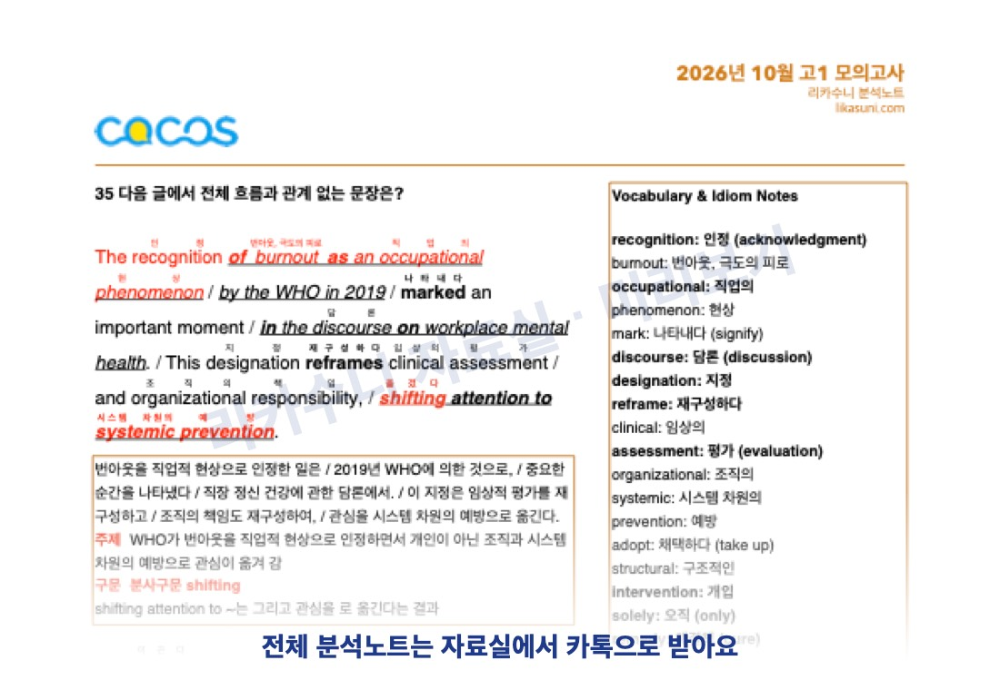

2026 고1 10모 영어 35번 무관한 문장 해설·분석이에요. (2026 10월 고1 영어 모의고사 · 전국연합학력평가 · 흐름과 관계없는 문장 · 정답 ③)
정답 근거, 나머지 번호가 이어지는 이유, 구문(rather than · invite A to do · a shift away from A toward B · help + 목적어 + 동사원형), 어휘를 정리했고 분석노트 전자책·pdf 보는 곳은 글 아래에 있어요.
안녕하세요, 이매동 코코스학원 리카수니 원장입니다.
학생 요청으로 만든 분석노트를 바탕으로 정리했어요. 시험지를 옆에 펴 놓고 보시면 더 잘 보여요.
· 시험: 2026년 10월 고1 전국연합학력평가 영어
· 번호: 35번 (전체 흐름과 관계없는 문장)
· 정답: ③
2019년 WHO가 번아웃을 '직업적 현상'으로 인정하면서, 번아웃을 개인의 약점이 아니라 조직과 시스템의 문제로 보게 됐다는 글이에요.
관심이 개인의 대처에서 조직 차원의 구조적·정책적 예방으로 옮겨 갔다는 흐름이에요.
· 글 전체: 번아웃 = 개인 문제가 아니라 조직·시스템 문제 → 구조적 예방이 필요해요.
· ③은 '개인이 스트레스를 만드는 패턴을 바꿔 스스로 회복할 수 있다'는 개인 차원의 회복 방법이에요.
→ 흐름(개인 → 조직)과 반대 방향이라 정답 ③이에요.
· ① 고용주가 개인 해결책 대신 구조적 개입을 하도록 이끈다 → 주제와 바로 이어져요.
· ② 임상의가 산업 보건 부서·지도부와 협력해 근본 원인을 다룬다 → 구조적 접근의 실제 모습이에요.
· ④ 개인의 실패·회복 탄력성에서 구조적 문제로의 전환 → 주제를 다시 강조해요.
· ⑤ 이 재구성이 시스템·정책 변화로 이어진다 → 결론이에요.
무관한 문장은 '주어가 누구인가(개인 vs 조직)'만 따라가도 걸러져요.

1) 분사구문 shifting (~하고, 관심을 옮긴다)
→ This designation reframes clinical assessment and organizational responsibility, shifting attention to systemic prevention.
2) invite A to do / rather than -ing
→ It invites employers to adopt structural interventions rather than relying solely on individual-level remedies.
3) help + 목적어 + 동사원형 (help themselves recover)
4) a shift away from A toward B / 과거분사 rooted in
5) 이유의 as / place a burden on (~에게 부담을 지우다)
· recognition 인정
· burnout 번아웃, 극도의 피로
· occupational 직업의
· phenomenon 현상
· discourse 담론
· designation 지정
· reframe 재구성하다
· assessment 평가
· systemic 시스템 차원의
· prevention 예방
· adopt 채택하다
· structural 구조적인
· intervention 개입
· solely 오직
· remedy 해결책
· collaborate with ~와 협력하다
· address 다루다
· root cause 근본 원인
· resilience 회복 탄력성
· rooted in ~에 뿌리를 둔
· burden 부담 / cope 대처하다
분석노트에 '서술형 대비 한 문장'(Burnout is a problem of the workplace, not just a weakness of the worker. 번아웃은 일하는 사람의 약점만이 아니라 일터의 문제다)과 '다루다' 표현 정리(deal with / handle / address / tackle), 영어 핵심 요약(Core Summary)을 해석과 함께 넣어 두었어요.
아래 자료실 페이지에서 이 문항 분석노트를 전자책으로 바로 볼 수 있어요. (끊어 읽기·해석·구문·어휘 2쪽)
인쇄용 pdf 는 카카오 로그인 후 카톡으로 받을 수 있고, 같은 회차 다른 번호도 요청할 수 있어요.
같은 페이지 위쪽 회차 메뉴에서 2026 고1 10모 영어 분석노트·변형문제·단어 pdf, 전과목 문제지·정답 pdf와 등급컷도 볼 수 있어요.
▶ 2026 고1 10모 영어 35번 해설·전자책 (리카수니 자료실)
https://data.likasuni.com/moe/go1/2026-10/eng/35/
분당 이매동 코코스학원은 초등·중등·고등 영어와 수학을 가르쳐요.
모의고사·수능특강·내신 대비가 궁금하시면 편하게 문의해 주세요.
· 홈페이지: https://www.cocosedu.co.kr/
· 주소: 경기 성남시 분당구 판교로 476 2층